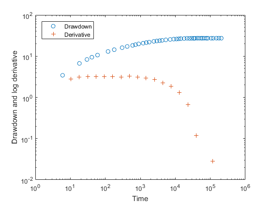
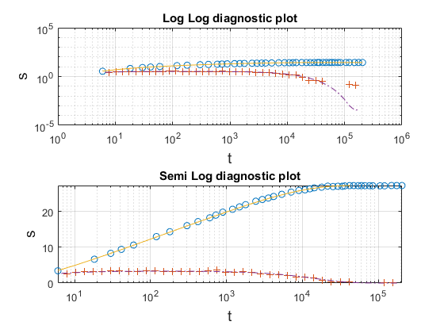
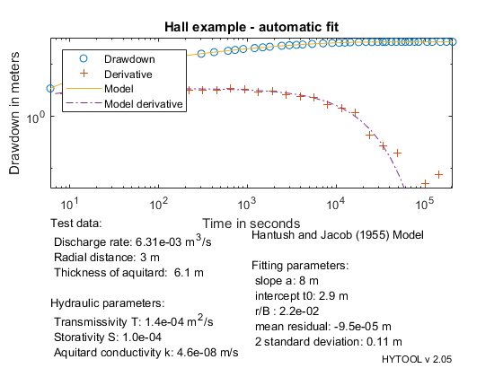

Confined aquifer with leakage
This demonstrates the interpretation of a pumping test in confined aquifer with leakage with the% hantush and Jacob (1955) model
Copyright 1998-2007 - Ph. Renard & Co. - GNU GENERAL PUBLIC LICENSE
The data set for this example comes from the following reference: Hall, P. Water well and aquifer test analysis 1996, Water Resources Publications, LLC, 412 pp. Example Fig 11.14 p.267-268
Let us first load the data and plot them.
[t,s]=ldf('htj_ds1.dat');
diagnostic(t,s)
 We then define the values of the parameters that are required for the interpretation:
t = measured time s = measured drawdown d(1) = Q =6.309 e-3 m3/s % Pumping rate d(2) = r =3.048 m % Distance to the pumping well d(3) = e'=6.096 m % Thickness of the aquitard
Once the data have been loaded and the parameter defined, we can interpret the data. We do that as usually in two steps. First the parameters p of the model are estimated with the function htj_gss. Then we used to find an optimum fit.
p0=htj_gss(t,s); % The initial guess is incorrect trial('htj',p0,t,s) p=fit('htj',p0,t,s);
Norm of Norm of
Iteration SSE Gradient Step
-----------------------------------------------------------
0 0.251771
1 0.0873915 0.480908 0.242917
2 0.0823017 0.0188208 0.0525478
3 0.082299 9.0647e-06 0.0010401
4 0.082299 2.15662e-09 2.82403e-06
Iterations terminated: relative change in SSE less than OPTIONS.TolFun
Norm of Norm of
Iteration SSE Gradient Step
-----------------------------------------------------------
0 0.772752
1 0.18116 93.2499 0.0955832
2 0.13279 33.25 0.134556
3 0.132252 0.349418 0.014008
4 0.132252 0.000265487 0.000147928
5 0.132252 6.45377e-05 8.93205e-05
6 0.132252 0.0101117 9.84102e-06
7 0.132252 0.0268441 8.91998e-09
Iterations terminated: relative norm of the current step is less than OPTIONS.TolX
 We can then display the result of the interpretation. Hytool find that the folowing values for the transmissivity and storativity:
T: 1.4e-004 m2/s and S: 1 e-04
htj_rpt(p,t,s,[6.309e-3,3.048,6.096],'Hall example - automatic fit')
 The results are in reasonable agreement with the values found by Hall (1996): T = 7.77 e-5 m2/s S = 5.0193 e-4
We then find that the fits are rather similar and both acceptable.